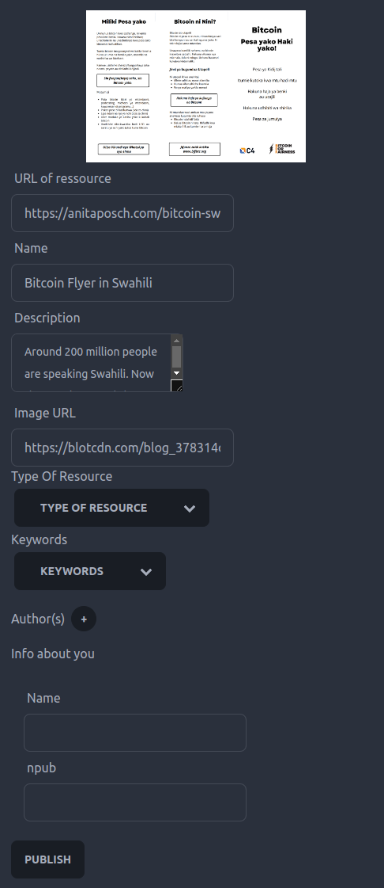

Hack On Nostr - Bitcoin Library üìöÔ∏è
Bitcoin Library
A decentralized approach for community based web annotation using Nostr

ME
Steffen
aka @steffenr42 or @laoc42
Researcher and Software Developer in the field of Open Education
üß° üíú
Agenda
- What’s the Problem?
- Central Services VS Fediverse VS Nostr
- Bitcoin Library: Demo
- Bitcoin Library: Under the Hood
- NIPs used and future development
What’s the Problem?
- Lots of great educational resources about any kind of topic out there
- But though we have Twitter, Mastodon or Twitter-like Nostr clients, where lots of interesting resources are shared, we lack a service to collaborativley annotate resources on the web
Ok, so then just build that service
Requirements for educational services (about highly controversial topics):
- decentralized
- censorship-resistant
- Value 4 Value
(V4V Because the content might not be funded from the state or similiar)
Centralization
Twitter, Facebook, Instagram are for obvious reasons not suited for such a service
Fediverse
- based on ActivityPub (W3C)
- very standard oriented
- the walled garden now has doors, doesn’t it?
Though a lot better some problems remain:
- controlled by instance admins
- data hardly moveable
- no value for value
Why is Value 4 Value so important at all?
- People sharing free educational content are doing humanity a great favour
- Lots of use of Creative Common Licenses in Bitcoin space ➡️ makes reusability easier
- But how to provide feedback despite a like?
Conclusion for centralized services and the fediverse:
- not decentralized
- easy to censor
- hard to offer incentives for content creators (or annotators)
Bitcoin Library
Example of how community based annotation of web resources could work using a technology like Nostr in the field of Bitcoin education.
Why Nostr?
- By design decentralized
- Hard to censor
- Affinity to Bitcoin and Lightning facilitates V4V
DEMO
Components of the Bitcoin Library
- Metadata-Editor to annotate web resources (Browser Extension)
- “Note Fetcher” to collect notes and transform them
- Frontend to display and search through resources
Browser Extension
- Simple Metadata Editor
- JSON Schema
- SKOS (Simple Knowledge Organization System)

Metadata Attributes as Nostr Bots

- SKOS Concepts (i.e. controlled vocabularies) set up as bots.
- Every selected entry will repost the resource.
- So you can follow these bots (and later send them resources as well)
Event Data
[
"EVENT",
"0",
{
"id": "bd000c944f40667b9cfc7f1d99e60f456de6f797aa39ebeb12113cac93cbb98c",
"kind": 1,
"pubkey": "8af30833be407219d6a2d2a6a84d2cea7d3c212693090fcc2b110ca944c3a617",
"created_at": 1682689537,
"content": "Hello! A new resource with title \"Bitcoin Flyer in Swahili\" got added to the library!\n https://blotcdn.com/blog_378314d0a9ec45bfa46b3bc7d3718410/_thumbnails/b0cefa01-8abe-42ed-89fe-d6a1e79b6e11/large.png\nAround 200 million people are speaking Swahili. Now they can learn and share the basics about Bitcoin with BFF's Bitcoin flyer..\nSent from nostr:npub1j8wdpuqqct23l4gyyxa5dkjvgkxzkjh3n3mzzjj79uhcvh424pcqurytqu (Bitcoin Library).\n ",
"tags": [
[
"p",
"8af30833be407219d6a2d2a6a84d2cea7d3c212693090fcc2b110ca944c3a617"
],
[
"metadata",
"{\"id\":\"https://anitaposch.com/bitcoin-swahili\",\"name\":\"Bitcoin Flyer in Swahili\",\"description\":\"Around 200 million people are speaking Swahili. Now they can learn and share the basics about Bitcoin with BFF's Bitcoin flyer.\",\"image\":\"https://blotcdn.com/blog_378314d0a9ec45bfa46b3bc7d3718410/_thumbnails/b0cefa01-8abe-42ed-89fe-d6a1e79b6e11/large.png\",\"resourceType\":[{\"id\":0,\"checked\":true,\"title\":\"Artikel\",\"uri\":\"https://w3id.org/bitcoin-library/bots/f631971e-ee83-4c95-9fcf-b1c1639bb4f6\"}],\"keywords\":[{\"id\":1,\"title\":\"Allgemein Bitcoin\",\"uri\":\"https://w3id.org/bitcoin-library/bots/4e42c22d-0b45-4d8a-bb49-6d95d56e2558\",\"checked\":true}],\"authors\":[{\"name\":\"Anita Posch\",\"npub\":\"npub1tjkc9jycaenqzdc3j3wkslmaj4ylv3dqzxzx0khz7h38f3vc6mls4ys9w3\",\"id\":\"4EEmDu8x\"}],\"metadataContributor\":{\"name\":\"\",\"npub\":\"\"}}"
]
],
"sig": "b07b2db792ff8c90526e93695dbad1d030a45e4b3e4b64138d0a0aa24d53d5405bcca4a6d4c2231c2eae9b267a0366473c2d0eba63309c259adc7eb2b0a59190"
}
]
Note Fetcher
- ETL-work
- polls the relay every 5 seconds to retrieve new data
- Either pushes it directly to the index if URL of resource does not exist
- OR Merges the metadata with existing metadata in the index
Frontend

Challenge: Differing Metadata Annotations
In a decentralized annotation system, metadata for the same resource will differ sooner or later
How to handle this?
- The note fetcher merges the metadata and sets it in proportion with attributes that were already given. The frontend resembles that through opacity of the tags.


It is not yet an implementation of (NIP-57), but we use the LUD16 field of the profiles retrieved via the npub of the actor. Then the payment is made using simple WebLN standard
That’s it?
Basically yes.
But you might have noticed:
There is no data in the code
Easy to adopt
The usage of JSON Schema and SKOS makes the whole approach easily adaptable.
Want to build a library (community) for recipes?
➡️ Create a JSON Schema for it and some vocabularies and go!
NIPs used
Future Developments
- go public
- NIP51 for building lists of interesting content (see https://listr.lol/)
- think about UX for mobile users
Questions / Discussion
Thank you!
- How to be sure I’m zapping the right person?
- Create a NIP like 94 (File Metadata)?